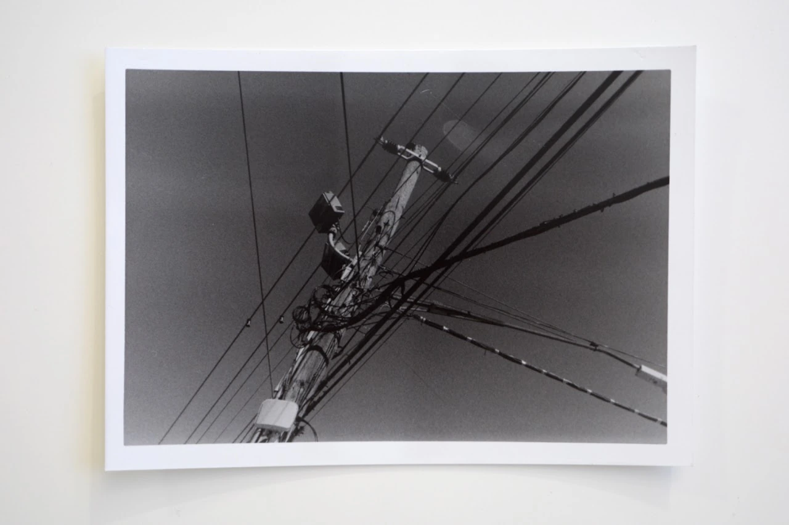
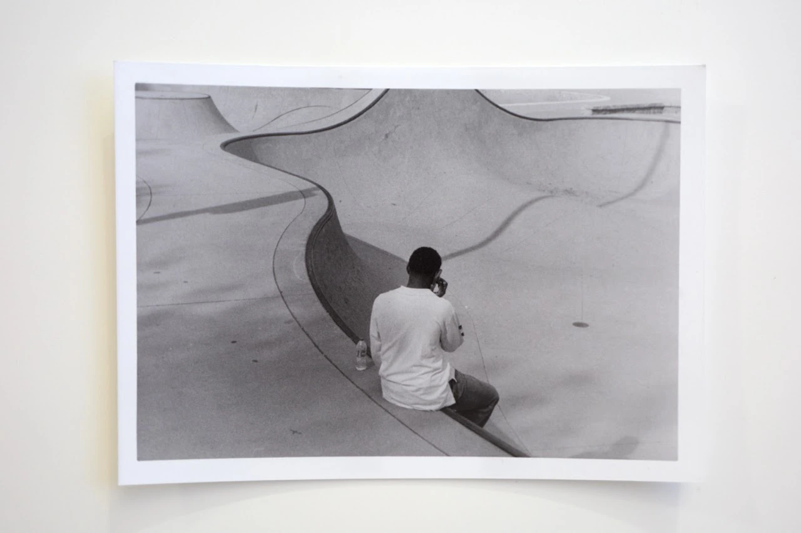

Photography series
Deliberate Practice
 Cover unavailable. Open the project to continue.
Cover unavailable. Open the project to continue.Assignment #1: Light, contrast, mood — back to contents


Assignment #2: Symmetric and asymmetric visual thinking — back to contents



Image unavailable. Open the original photograph.
 Image unavailable. Open the original photograph.
Image unavailable. Open the original photograph.
Image unavailable. Open the original photograph.